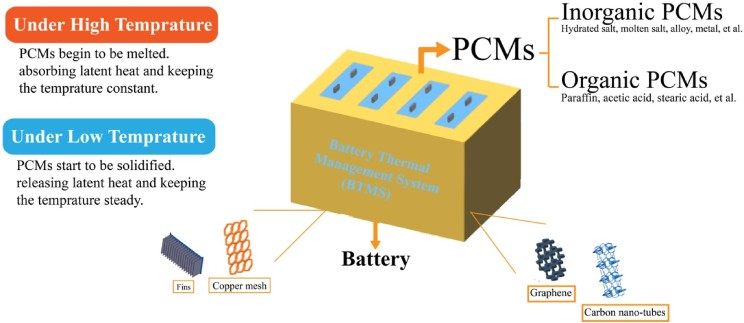
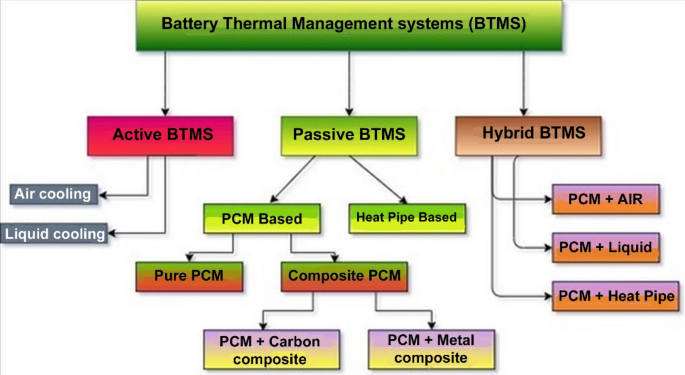
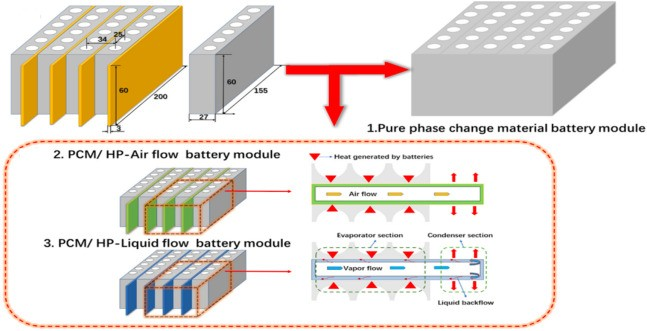
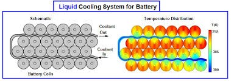
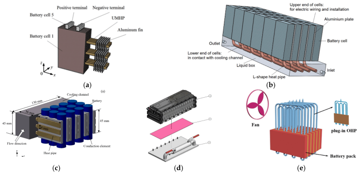
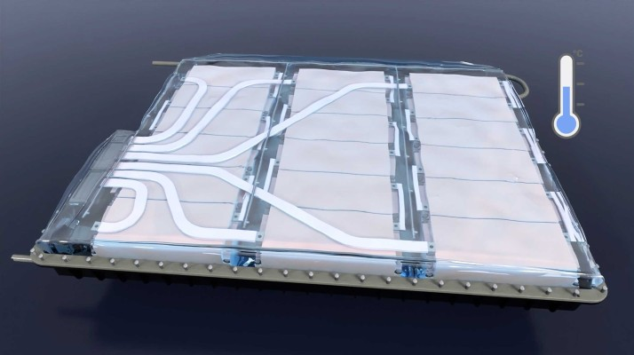

As electric vehicles (EVs) gain popularity, the importance of effective battery thermal management systems (BTMS) has become increasingly clear. These systems play a critical role in ensuring optimal performance, safety, and longevity of EV batteries, which are the heart of these vehicles.
Understanding Battery Thermal Management Systems
What is BTMS?
BTMS refers to the set of mechanisms designed to maintain an optimal temperature for EV batteries. These systems regulate the heat generated during battery operation and ensure consistent performance.
Key Components of BTMS
- Cooling Units: Either liquid or air-based systems to dissipate heat.
- Heating Elements: Prevent battery freezing in cold conditions.
- Monitoring Sensors: Track temperature fluctuations in real time.

Why Thermal Management is Crucial for EV Batteries
1. Driving Range and Efficiency
Temperature fluctuations can severely impact an EV's driving range. Cold temperatures increase internal resistance, leading to reduced power output and range. Conversely, high temperatures can accelerate battery degradation. Efficient thermal management systems help maintain optimal temperatures, thereby enhancing driving efficiency.
2. Charging Speed
Fast charging is a key feature for many EVs, but it generates significant heat. A well-designed BTMS allows for higher charging currents without damaging the battery cells. By managing temperatures during charging, these systems enable faster energy absorption and reduce the risk of overheating. Techniques such as direct refrigerant cooling have proven effective in maintaining battery temperature during fast charging.
3. Battery Lifespan
An efficient BTMS can increase the number of charge-discharge cycles a battery can endure before reaching its end-of-life capacity. By preventing exposure to extreme temperatures, these systems slow down the natural degradation process of battery cells. Consistent temperature management across the battery pack ensures uniform aging of cells, preventing premature failures.
4. Safety Considerations
Safety is paramount in electric vehicles. BTMS is crucial in preventing thermal runaway incidents by regulating battery temperatures across various ambient conditions—from sub-zero to extreme heat. This regulation not only protects the battery but also enhances overall vehicle safety.
Types of Battery Thermal Management Systems
- Passive Thermal Management Systems: Rely on materials and design to manage heat without external energy input.
- Active Thermal Management Systems: Use external power to operate cooling or heating mechanisms for better precision.

Emerging Technologies in BTMS
Case Study 1: Phase Change Material Cooling
Study Overview: A recent study compared the performance of phase change material (PCM) cooling systems against traditional cooling methods in electric vehicles. The research focused on maintaining optimal battery temperatures during high discharge rates.

Findings:
- Temperature Control: The PCM cooling system maintained maximum battery temperatures at 35.5 °C, compared to 31.5 °C with heat-pipe-assisted PCM cooling
- Efficiency: The integration of PCM with microchannel cooling plates significantly improved temperature uniformity and prevented thermal runaway during extreme conditions
- Conclusion: PCM systems provide effective temperature regulation, enhancing battery performance and safety during high-demand scenarios.
Case Study 2: Direct Liquid Cooling Systems
Study Overview: Researchers developed a direct liquid-cooling system designed to manage the thermal behavior of lithium-ion battery modules effectively.

Findings:
- Temperature Maintenance: At a discharge rate of 3C, the system kept the maximum temperature below 36 °C with a minimal temperature difference of 0.65 °C across the battery
- Weight Efficiency: The accessory weight ratio was reduced to 10.25%, demonstrating that effective thermal management can be achieved without significantly increasing vehicle weight
- Conclusion: Direct liquid cooling systems are highly efficient for maintaining optimal battery temperatures while minimizing added weight, making them suitable for high-performance EVs.
Case Study 3: Hybrid Cooling Systems
Study Overview: A hybrid BTMS combining phase change materials and copper foam with air-jet pipes and liquid channels was tested for its thermal performance.

Findings:
- Performance Improvement: This hybrid system reduced the maximum battery temperature by 14.6% and the temperature difference by 64.7% compared to traditional methods
- Energy Density Enhancement: The optimal configuration increased energy density by 11.23%, indicating that better thermal management can lead to improved overall vehicle efficiency
- Conclusion: Hybrid systems that integrate multiple cooling techniques can significantly enhance thermal performance and energy efficiency in EV batteries.
Case Study 4: Immersion Cooling Techniques
Study Overview: An experimental study evaluated the performance of immersion cooling using water for lithium-ion batteries.

Findings:
- Temperature Regulation: The immersion cooling system maintained battery temperatures below 50 °C at a flow rate of just 200 mL/min during high discharge rates
- Uniformity Improvement: By increasing the flow rate to 500 mL/min, the maximum temperature difference across the battery pack dropped below 5 °C, showcasing effective thermal uniformity
- Conclusion: Immersion cooling is a promising method for maintaining consistent temperatures across battery packs, particularly beneficial for high-performance applications.
Future of Battery Thermal Management in EVs
From Tesla ’s liquid cooling systems to Nissan Motor Corporation Leaf's air-cooled design, each brand tailors BTMS to their performance goals. While advanced BTMS might increase upfront costs, they result in significant savings by enhancing battery lifespan and reducing maintenance needs. With advancements like solid-state batteries and AI-driven optimization, the future of BTMS looks promising, ensuring safer, more efficient, and sustainable EV operations.